symebcovmf_laplace_split_init_tree
Annie Xie
2025-05-15
Last updated: 2026-03-04
Checks: 7 0
Knit directory:
symmetric_covariance_decomposition/
This reproducible R Markdown analysis was created with workflowr (version 1.7.2). The Checks tab describes the reproducibility checks that were applied when the results were created. The Past versions tab lists the development history.
Great! Since the R Markdown file has been committed to the Git repository, you know the exact version of the code that produced these results.
Great job! The global environment was empty. Objects defined in the global environment can affect the analysis in your R Markdown file in unknown ways. For reproduciblity it’s best to always run the code in an empty environment.
The command set.seed(20250408) was run prior to running
the code in the R Markdown file. Setting a seed ensures that any results
that rely on randomness, e.g. subsampling or permutations, are
reproducible.
Great job! Recording the operating system, R version, and package versions is critical for reproducibility.
Nice! There were no cached chunks for this analysis, so you can be confident that you successfully produced the results during this run.
Great job! Using relative paths to the files within your workflowr project makes it easier to run your code on other machines.
Great! You are using Git for version control. Tracking code development and connecting the code version to the results is critical for reproducibility.
The results in this page were generated with repository version d6aae5a. See the Past versions tab to see a history of the changes made to the R Markdown and HTML files.
Note that you need to be careful to ensure that all relevant files for
the analysis have been committed to Git prior to generating the results
(you can use wflow_publish or
wflow_git_commit). workflowr only checks the R Markdown
file, but you know if there are other scripts or data files that it
depends on. Below is the status of the Git repository when the results
were generated:
Ignored files:
Ignored: .DS_Store
Ignored: .Rhistory
Ignored: analysis/.DS_Store
Ignored: data/.DS_Store
Note that any generated files, e.g. HTML, png, CSS, etc., are not included in this status report because it is ok for generated content to have uncommitted changes.
These are the previous versions of the repository in which changes were
made to the R Markdown
(analysis/symebcovmf_laplace_split_init_tree.Rmd) and HTML
(docs/symebcovmf_laplace_split_init_tree.html) files. If
you’ve configured a remote Git repository (see
?wflow_git_remote), click on the hyperlinks in the table
below to view the files as they were in that past version.
| File | Version | Author | Date | Message |
|---|---|---|---|---|
| Rmd | d6aae5a | Annie Xie | 2026-03-04 | Re-run analyses with new backfit function |
| html | 041a68a | Annie Xie | 2025-06-19 | Build site. |
| Rmd | 78cd5d1 | Annie Xie | 2025-06-19 | Update backfit function |
| html | eaf2917 | Annie Xie | 2025-06-10 | Build site. |
| Rmd | c9e74f5 | Annie Xie | 2025-06-10 | Add comments to point laplace analysis |
| html | f885e97 | Annie Xie | 2025-06-06 | Build site. |
| Rmd | 7f4f0cf | Annie Xie | 2025-06-06 | Add to point laplace split analysis |
| html | e557427 | Annie Xie | 2025-06-03 | Build site. |
| Rmd | 14cbb81 | Annie Xie | 2025-06-03 | Add analysis of laplace split initialization |
Introduction
In this analysis, we explore symEBcovMF with the GBCD initialization procedure – fitting with point-Laplace prior and then splitting the matrices into the negative and non-negative parts – in the tree setting.
Motivation
We are interested in this procedure because it is the initialization procedure for GBCD, and it seems to work well empirically. We are interested in whether this procedure also works well for symEBcovMF. There isn’t much justification for this procedure beyond Jason’s work with divergence factorizations in the tree setting.
Packages and Functions
library(ebnm)
library(pheatmap)
library(ggplot2)Warning: package 'ggplot2' was built under R version 4.5.2library(symebcovmf)source('code/visualization_functions.R')Data Generation
To test this procedure, I will apply it to the tree-structured dataset.
sim_4pops <- function(args) {
set.seed(args$seed)
n <- sum(args$pop_sizes)
p <- args$n_genes
FF <- matrix(rnorm(7 * p, sd = rep(args$branch_sds, each = p)), ncol = 7)
# if (args$constrain_F) {
# FF_svd <- svd(FF)
# FF <- FF_svd$u
# FF <- t(t(FF) * branch_sds * sqrt(p))
# }
LL <- matrix(0, nrow = n, ncol = 7)
LL[, 1] <- 1
LL[, 2] <- rep(c(1, 1, 0, 0), times = args$pop_sizes)
LL[, 3] <- rep(c(0, 0, 1, 1), times = args$pop_sizes)
LL[, 4] <- rep(c(1, 0, 0, 0), times = args$pop_sizes)
LL[, 5] <- rep(c(0, 1, 0, 0), times = args$pop_sizes)
LL[, 6] <- rep(c(0, 0, 1, 0), times = args$pop_sizes)
LL[, 7] <- rep(c(0, 0, 0, 1), times = args$pop_sizes)
E <- matrix(rnorm(n * p, sd = args$indiv_sd), nrow = n)
Y <- LL %*% t(FF) + E
YYt <- (1/p)*tcrossprod(Y)
return(list(Y = Y, YYt = YYt, LL = LL, FF = FF, K = ncol(LL)))
}sim_args = list(pop_sizes = rep(40, 4), n_genes = 1000, branch_sds = rep(2,7), indiv_sd = 1, seed = 1)
sim_data <- sim_4pops(sim_args)This is a heatmap of the scaled Gram matrix:
plot_heatmap(sim_data$YYt, colors_range = c('blue','gray96','red'), brks = seq(-max(abs(sim_data$YYt)), max(abs(sim_data$YYt)), length.out = 50))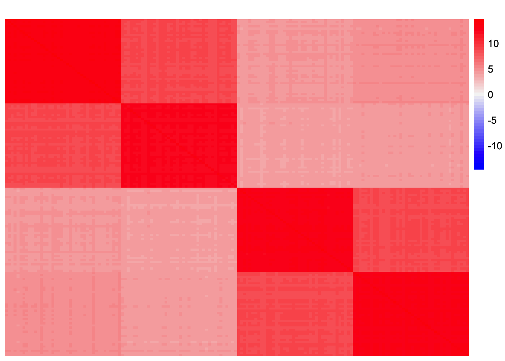
This is a scatter plot of the true loadings matrix:
pop_vec <- c(rep('A', 40), rep('B', 40), rep('C', 40), rep('D', 40))
plot_loadings(sim_data$LL, pop_vec)
This is a plot of the eigenvalues of the Gram matrix:
S_eigen <- eigen(sim_data$YYt)
plot(S_eigen$values) + abline(a = 0, b = 0, col = 'red')
integer(0)This is the minimum eigenvalue:
min(S_eigen$values)[1] 0.3724341symEBcovMF with point-Laplace
First, we run greedy symEBcovMF with the point-Laplace prior.
symebcovmf_fit <- sym_ebcovmf_fit(S = sim_data$YYt, ebnm_fn = ebnm::ebnm_point_laplace, K = 7, maxiter = 500, rank_one_tol = 10^(-8), tol = 10^(-8), sign_constraint = NULL, refit_lam = TRUE)[1] "Adding factor 1"
[1] "Adding factor 2"
[1] "Adding factor 3"
[1] "Adding factor 4"
[1] "Adding factor 5"Warning in sym_ebcovmf_r1_fit(S, sym_ebcovmf_obj, ebnm_fn, maxiter,
rank_one_tol, : scaling factor is zero[1] "Adding factor 5 does not improve the objective function"This is a scatter plot of \(\hat{L}_{pt-laplace}\), the estimate from symEBcovMF:
bal_pops <- c(rep('A', 40), rep('B', 40), rep('C', 40), rep('D', 40))
plot_loadings(symebcovmf_fit$L_pm %*% diag(sqrt(symebcovmf_fit$lambda)), bal_pops)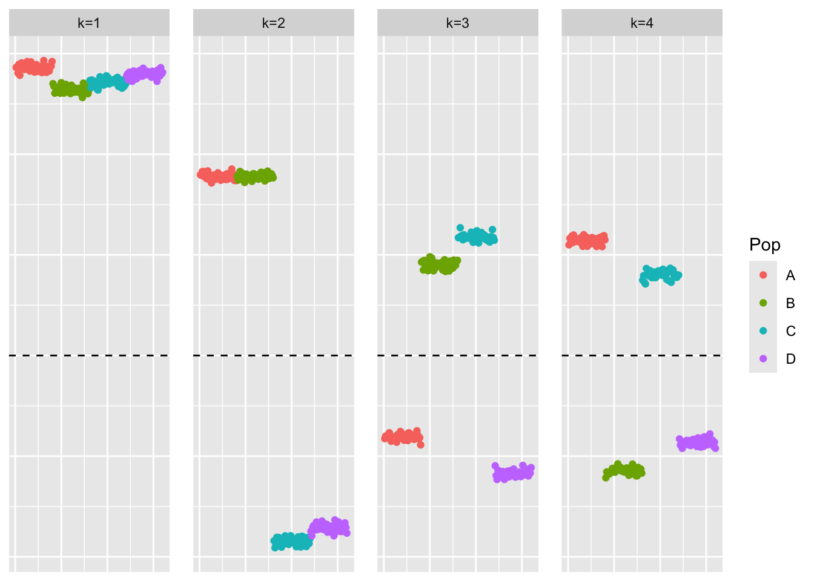
| Version | Author | Date |
|---|---|---|
| e557427 | Annie Xie | 2025-06-03 |
This is the objective function value attained:
symebcovmf_fit$elbo[1] -10362.6Additional Backfit
GBCD does additional backfitting on the point-Laplace fit, so I want to test how additional backfitting performs.
symebcovmf_fit_backfit <- sym_ebcovmf_backfit(sim_data$YYt, symebcovmf_fit, ebnm_fn = ebnm_point_laplace, backfit_maxiter = 500)This is a scatter plot of \(\hat{L}_{pt-laplace-backfit}\), the estimate from symEBcovMF with backfit:
bal_pops <- c(rep('A', 40), rep('B', 40), rep('C', 40), rep('D', 40))
plot_loadings(symebcovmf_fit_backfit$L_pm %*% diag(sqrt(symebcovmf_fit_backfit$lambda)), bal_pops)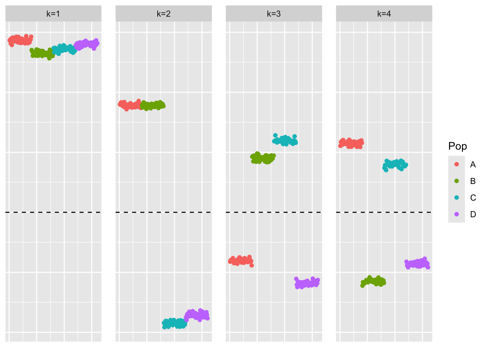
This is the objective function value attained:
symebcovmf_fit_backfit$elbo[1] 9399.49The estimate from the backfit attains a higher objective function, but is not characteristically very different from the greedy procedure estimate.
Split
Now, we split the estimate into its positive and negative parts.
LL_split_init <- cbind(pmax(symebcovmf_fit$L_pm, 0), pmax(-symebcovmf_fit$L_pm, 0))This is a heatmap of the estimate with its positive and negative parts split into different factors, \(\hat{L}_{split}\).
plot_heatmap(LL_split_init)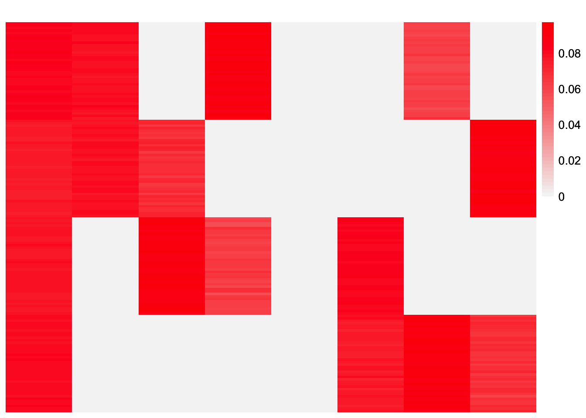
Backfit with Split Initialization
Now, we backfit from the split initialization (this is what GBCD does). The backfit is run with the point-exponential prior.
First, we initialize a symEBcovMF object using \(\hat{L}_{split}\).
symebcovmf_laplace_split_init_obj <- sym_ebcovmf_init(sim_data$YYt)
split_L_norms <- apply(LL_split_init, 2, function(x){sqrt(sum(x^2))})
idx.keep <- which(split_L_norms > 0)
split_L_normalized <- apply(LL_split_init[,idx.keep], 2, function(x){x/sqrt(sum(x^2))})
symebcovmf_laplace_split_init_obj$L_pm <- split_L_normalized
symebcovmf_laplace_split_init_obj$lambda <- rep(symebcovmf_fit$lambda, times = 2)[idx.keep]
symebcovmf_laplace_split_init_obj$resid_s2 <- estimate_resid_s2(S = sim_data$YYt,
L = symebcovmf_laplace_split_init_obj$L_pm,
lambda = symebcovmf_laplace_split_init_obj$lambda,
n = nrow(sim_data$Y),
K = length(symebcovmf_laplace_split_init_obj$lambda))
symebcovmf_laplace_split_init_obj$elbo <- compute_elbo(S = sim_data$YYt,
L = symebcovmf_laplace_split_init_obj$L_pm,
lambda = symebcovmf_laplace_split_init_obj$lambda,
resid_s2 = symebcovmf_laplace_split_init_obj$resid_s2,
n = nrow(sim_data$Y),
K = length(symebcovmf_laplace_split_init_obj$lambda),
KL = rep(0, length(symebcovmf_laplace_split_init_obj$lambda)))
symebcovmf_laplace_split_init_obj$fitted_gs <- rep(list(NULL), length(symebcovmf_laplace_split_init_obj$lambda))I refit the lambda values keeping the factors fixed.
symebcovmf_laplace_split_obj <- refit_lambda(S = sim_data$YYt, symebcovmf_laplace_split_init_obj, maxiter = 500)Now, we run the backfit with point-exponential prior.
symebcovmf_laplace_split_init_backfit <- sym_ebcovmf_backfit(sim_data$YYt, symebcovmf_laplace_split_init_obj, ebnm_fn = ebnm::ebnm_point_exponential, backfit_maxiter = 500)This is a plot of the estimate from the backfit initialized with the split estimate, \(\hat{L}_{split-backfit}\).
bal_pops <- c(rep('A', 40), rep('B', 40), rep('C', 40), rep('D', 40))
plot_loadings(symebcovmf_laplace_split_init_backfit$L_pm %*% diag(sqrt(symebcovmf_laplace_split_init_backfit$lambda)), bal_pops)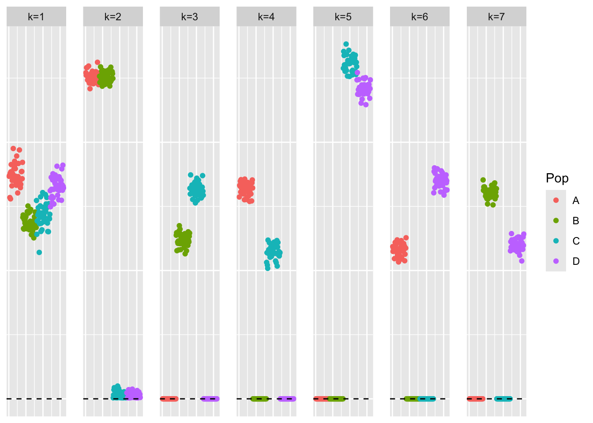
This is a heatmap of the estimated Gram matrix, \(\hat{L}_{split-backfit}\hat{\Lambda}\hat{L}_{split-backfit}'\).
gram_est <- tcrossprod(symebcovmf_laplace_split_init_backfit$L_pm %*% diag(sqrt(symebcovmf_laplace_split_init_backfit$lambda)))
plot_heatmap(gram_est, brks = seq(0, max(abs(gram_est)), length.out = 50))This is the L2 norm of the difference, excluding diagonal entries.
compute_L2_fit <- function(est, dat){
score <- sum((dat - est)^2) - sum((diag(dat) - diag(est))^2)
return(score)
}
compute_L2_fit(gram_est, sim_data$YYt)[1] 28.62076This is a plot of fitted vs. observed values:
ggplot(data = NULL, aes(x = as.vector(sim_data$YYt), y = as.vector(gram_est))) + geom_point() + geom_abline(slope = 1, intercept = 0, color = 'red') + xlab('Observed Values') + ylab('Fitted Values')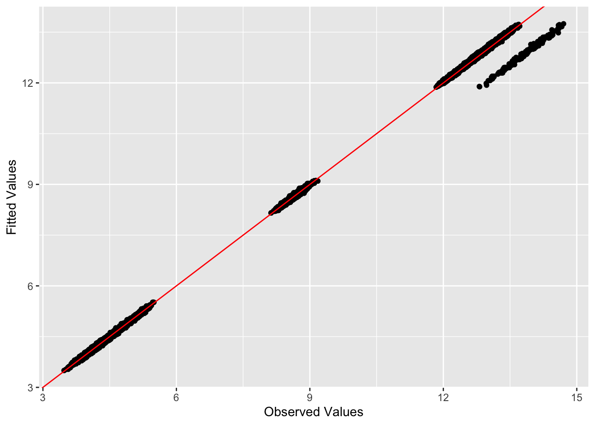
Observations
We see that this procedure does not yield a tree-structured estimate. Instead of four single population effect factors, we have four factors each containing two population effects. The estimated Gram matrix looks close to the observed Gram matrix, suggesting an identifiability issue. This is a well-known issue with the tree setting. Given that the point-Laplace initialization did not recover the divergence factorization, it is not surprising to me that the method did not recover a tree. For the GBCD method, the point-Laplace fit after backfitting is able to recover the divergence factorization (the greedy point-Laplace fit alone does not recover the factorization).
Further Exploration
point-Laplace backfit initialized from true values
To test if there is a convergence issue in the point-Laplace fit, I try running symEBcovMF backfit with point-Laplace prior initialized with the true factorization.
n <- nrow(sim_data$YYt)
L_divergence_true <- cbind(rep(1, n),
rep(c(1,-1), times = c(n/2, n/2)),
rep(c(1, -1, 0), times = c(n/4, n/4, n/2)),
rep(c(0, 1, -1), times = c(n/2, n/4, n/4)))First, we initialize a symEBcovMF object using \(\hat{L}_{split}\).
symebcovmf_true_init_obj <- sym_ebcovmf_init(sim_data$YYt)
true_L_normalized <- apply(L_divergence_true, 2, function(x){x/sqrt(sum(x^2))})
symebcovmf_true_init_obj$L_pm <- true_L_normalized
symebcovmf_true_init_obj$lambda <- rep(1, ncol(L_divergence_true))
symebcovmf_true_init_obj$resid_s2 <- estimate_resid_s2(S = sim_data$YYt,
L = symebcovmf_true_init_obj$L_pm,
lambda = symebcovmf_true_init_obj$lambda,
n = nrow(sim_data$Y),
K = length(symebcovmf_true_init_obj$lambda))
symebcovmf_true_init_obj$elbo <- compute_elbo(S = sim_data$YYt,
L = symebcovmf_true_init_obj$L_pm,
lambda = symebcovmf_true_init_obj$lambda,
resid_s2 = symebcovmf_true_init_obj$resid_s2,
n = nrow(sim_data$Y),
K = length(symebcovmf_true_init_obj$lambda),
KL = rep(0, length(symebcovmf_true_init_obj$lambda)))
symebcovmf_true_init_obj$fitted_gs <- rep(list(NULL), length(symebcovmf_true_init_obj$lambda))I refit the lambda values keeping the factors fixed.
symebcovmf_true_init_obj <- refit_lambda(S = sim_data$YYt, symebcovmf_true_init_obj, maxiter = 500)Now, we run the backfit with point-Laplace prior.
symebcovmf_true_init_backfit <- sym_ebcovmf_backfit(sim_data$YYt, symebcovmf_true_init_obj, ebnm_fn = ebnm::ebnm_point_laplace, backfit_maxiter = 100)This is a plot of the loadings estimate.
bal_pops <- c(rep('A', 40), rep('B', 40), rep('C', 40), rep('D', 40))
plot_loadings(symebcovmf_true_init_backfit$L_pm %*% diag(sqrt(symebcovmf_true_init_backfit$lambda)), bal_pops)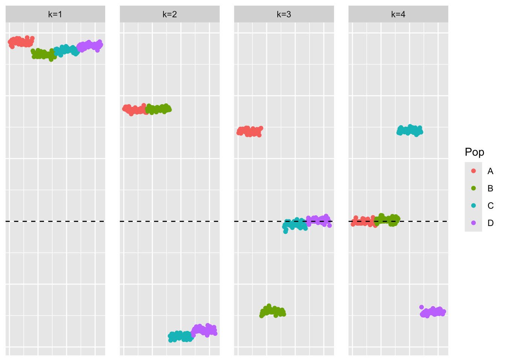
This is the objective function value:
symebcovmf_true_init_backfit$elbo[1] 9567.258This is a heatmap of the estimate of the Gram matrix:
true_init_gram_est <- tcrossprod(symebcovmf_true_init_backfit$L_pm %*% diag(sqrt(symebcovmf_true_init_backfit$lambda)))
plot_heatmap(true_init_gram_est, brks = seq(0, max(abs(true_init_gram_est)), length.out = 50))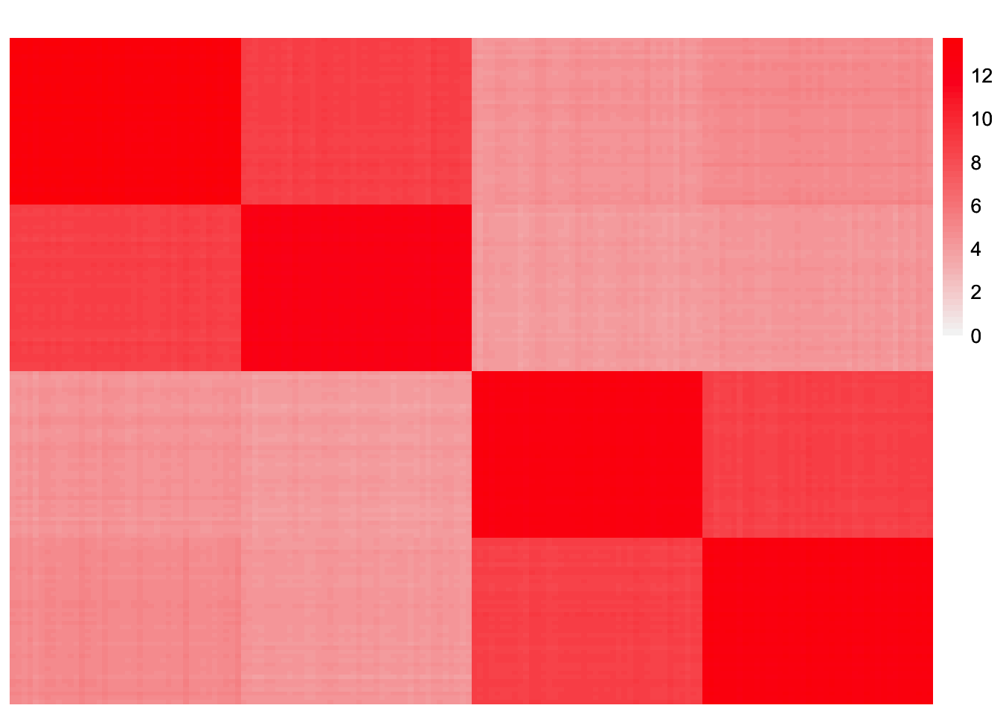
This is the L2 norm of the difference, excluding diagonal entries.
compute_L2_fit(true_init_gram_est, sim_data$YYt)[1] 28.65329This is a plot of fitted vs. observed values:
ggplot(data = NULL, aes(x = as.vector(sim_data$YYt), y = as.vector(true_init_gram_est))) + geom_point() + geom_abline(slope = 1, intercept = 0, color = 'red') + xlab('Observed Values') + ylab('Fitted Values')
Observations
This obtains a higher objective function value than the fit found by greedy symEBcovMF with backfit. So perhaps this is a convergence issue? Is GBCD/EBcovMF better at finding sparse solutions?
Greedy fit of third factor
Here, I investigate the greedy fit of the third factor.
First, we apply symEBcovMF with Kmax = 2 and compute the
residual matrix.
symebcovmf_rank2_fit <- sym_ebcovmf_fit(S = sim_data$YYt, ebnm_fn = ebnm::ebnm_point_laplace, K = 2, maxiter = 500, rank_one_tol = 10^(-8), tol = 10^(-8), sign_constraint = NULL, refit_lam = TRUE)[1] "Adding factor 1"
[1] "Adding factor 2"rank2_resid_matrix <- sim_data$YYt - tcrossprod(symebcovmf_rank2_fit$L_pm %*% diag(sqrt(symebcovmf_rank2_fit$lambda)))This is a plot of the loadings estimate.
plot_loadings(symebcovmf_rank2_fit$L_pm %*% diag(sqrt(symebcovmf_rank2_fit$lambda)), pop_vec)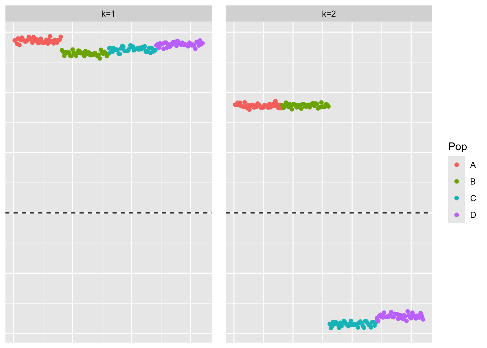
This is a heatmap of the residual matrix.
plot_heatmap(rank2_resid_matrix, colors_range = c('blue','gray96','red'), brks = seq(-max(abs(rank2_resid_matrix)), max(abs(rank2_resid_matrix)), length.out = 50))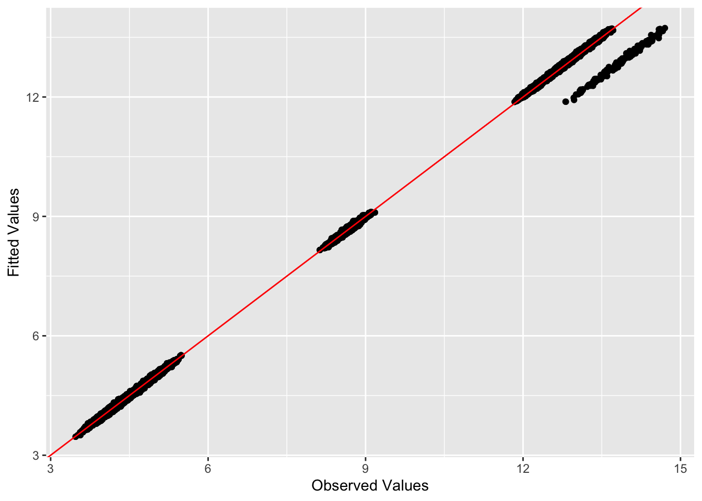
This is a plot of the first eigenvector of the residual matrix.
resid_eigen <- eigen(rank2_resid_matrix)
resid_eigen$values [1] 171.5817410 161.0477430 3.2516791 1.8914179 1.8892252 1.8445382
[7] 1.7989350 1.7817983 1.7653639 1.7587534 1.7116793 1.6904454
[13] 1.6853211 1.6682292 1.6511509 1.6306350 1.6131266 1.6032930
[19] 1.5799509 1.5677465 1.5631696 1.5452447 1.5376858 1.5294380
[25] 1.5239760 1.4991336 1.4761502 1.4681943 1.4508299 1.4481685
[31] 1.4340859 1.4155236 1.4059527 1.3925235 1.3872993 1.3689563
[37] 1.3677734 1.3442793 1.3372803 1.3295967 1.3204132 1.3079759
[43] 1.3010454 1.2937344 1.2813388 1.2599870 1.2528666 1.2473444
[49] 1.2358413 1.2265607 1.2170689 1.2119752 1.1937849 1.1835297
[55] 1.1793317 1.1738489 1.1687484 1.1580997 1.1449292 1.1294945
[61] 1.1229274 1.1211860 1.1027313 1.0976771 1.0885924 1.0783609
[67] 1.0742387 1.0646267 1.0567169 1.0497815 1.0446594 1.0352619
[73] 1.0231551 1.0202241 1.0127963 1.0091184 0.9910066 0.9843088
[79] 0.9824849 0.9744871 0.9693053 0.9586122 0.9474930 0.9424152
[85] 0.9349859 0.9319622 0.9264306 0.9183672 0.9032314 0.8925687
[91] 0.8853594 0.8813229 0.8652179 0.8612146 0.8576021 0.8417088
[97] 0.8408568 0.8329830 0.8309242 0.8209424 0.8044145 0.7974273
[103] 0.7959607 0.7913412 0.7840256 0.7729424 0.7702311 0.7618305
[109] 0.7554943 0.7452685 0.7425875 0.7385187 0.7309928 0.7292538
[115] 0.7216865 0.7141806 0.7042383 0.6922948 0.6839510 0.6763172
[121] 0.6661686 0.6635065 0.6561362 0.6534873 0.6487729 0.6412373
[127] 0.6348292 0.6310051 0.6238070 0.6168831 0.6124098 0.5966013
[133] 0.5923681 0.5841064 0.5769160 0.5728452 0.5665683 0.5601079
[139] 0.5524242 0.5421155 0.5399952 0.5348951 0.5261593 0.5101013
[145] 0.5069525 0.5009029 0.4931631 0.4838358 0.4802523 0.4745828
[151] 0.4707797 0.4656760 0.4555177 0.4502973 0.4331107 0.4239040
[157] 0.4142222 0.4019326 0.3781879 0.3724339plot(resid_eigen$vectors[,1])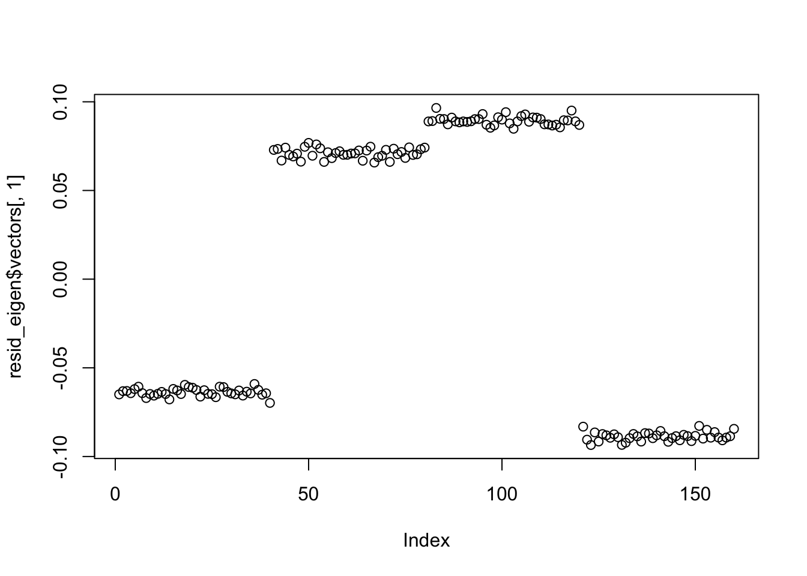
This is a heatmap of the component that corresponds to the first eigenvector.
plot_heatmap(tcrossprod(resid_eigen$vectors[,1]), colors_range = c('blue','gray96','red'), brks = seq(-max(abs(tcrossprod(resid_eigen$vectors[,1]))), max(abs(tcrossprod(resid_eigen$vectors[,1]))), length.out = 50))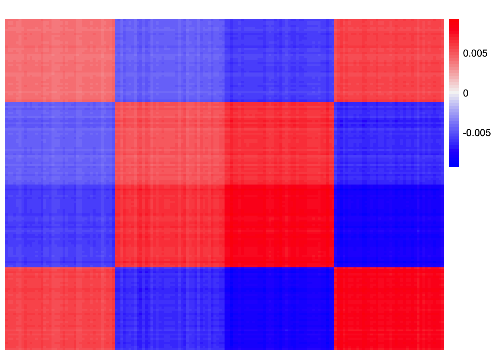
Initialize fit with true factor
Now, we try greedily fitting the third factor initialized with the true factor.
n <- ncol(sim_data$YYt)
true_fac3 <- rep(c(0, 1, -1), times = c(n/2, n/4, n/4))
symebcovmf_fac3_fit <- sym_ebcovmf_r1_fit(sim_data$YYt, symebcovmf_rank2_fit, ebnm_fn = ebnm_point_laplace, maxiter = 100, tol = 10^(-8), v_init = true_fac3, sign_constraint = NULL)This is a plot of the third factor estimate.
plot(symebcovmf_fac3_fit$L_pm[,3], ylab = 'Third Factor')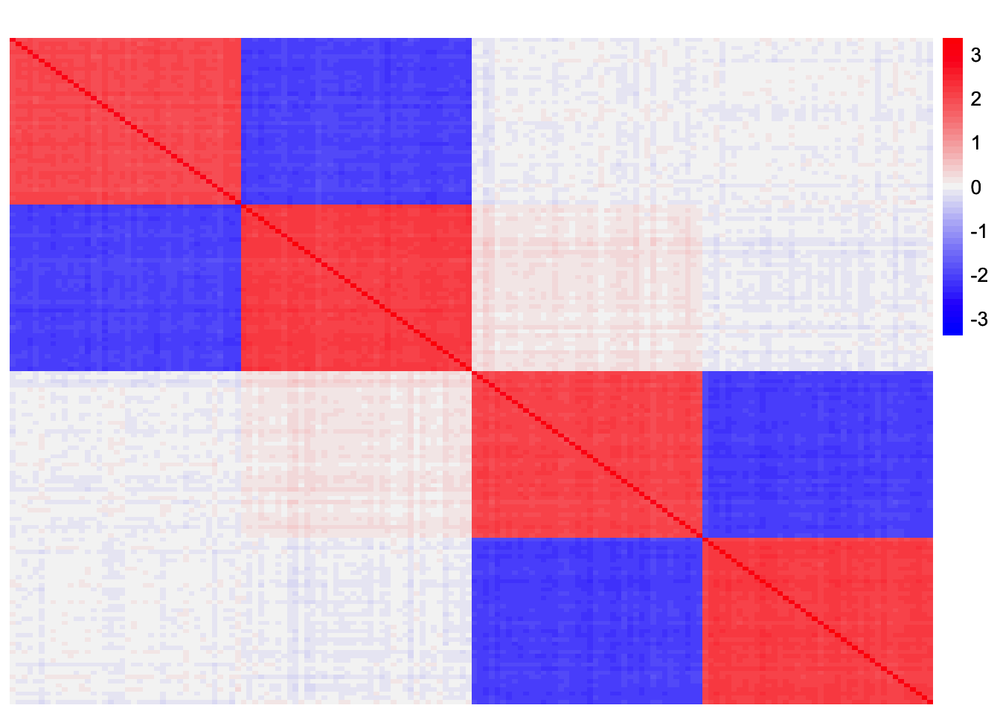
| Version | Author | Date |
|---|---|---|
| f885e97 | Annie Xie | 2025-06-06 |
This is a plot of the ELBO when optimizing the fourth factor.
fac3_idx <- which(symebcovmf_fac3_fit$vec_elbo_full == 3)
plot(symebcovmf_fac3_fit$vec_elbo_full[(fac3_idx+1): length(symebcovmf_fac3_fit$vec_elbo_full)], xlab = 'Iter', ylab = 'ELBO')
| Version | Author | Date |
|---|---|---|
| eaf2917 | Annie Xie | 2025-06-10 |
This is the objective function value:
symebcovmf_fac3_fit$elbo[1] -21295.69Initialize fit with default initialization
This is the fit of the third factor if the default initialization procedure is used.
symebcovmf_fac3_default_init_fit <- sym_ebcovmf_r1_fit(sim_data$YYt, symebcovmf_rank2_fit, ebnm_fn = ebnm_point_laplace, maxiter = 100, tol = 10^(-8), sign_constraint = NULL)This is a plot of the third factor estimate.
plot(symebcovmf_fac3_default_init_fit$L_pm[,3], ylab = 'Third Factor')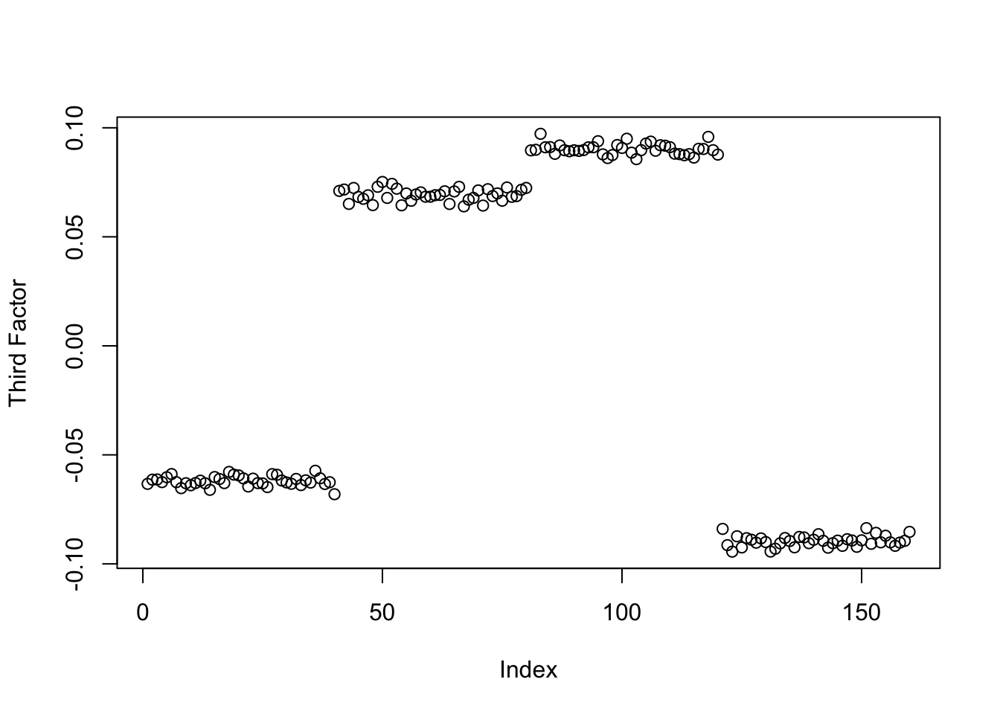
| Version | Author | Date |
|---|---|---|
| eaf2917 | Annie Xie | 2025-06-10 |
This is a plot of the ELBO when optimizing the third factor.
fac3_idx <- which(symebcovmf_fac3_default_init_fit$vec_elbo_full == 3)
plot(symebcovmf_fac3_default_init_fit$vec_elbo_full[(fac3_idx+1): length(symebcovmf_fac3_default_init_fit$vec_elbo_full)], xlab = 'Iter', ylab = 'ELBO')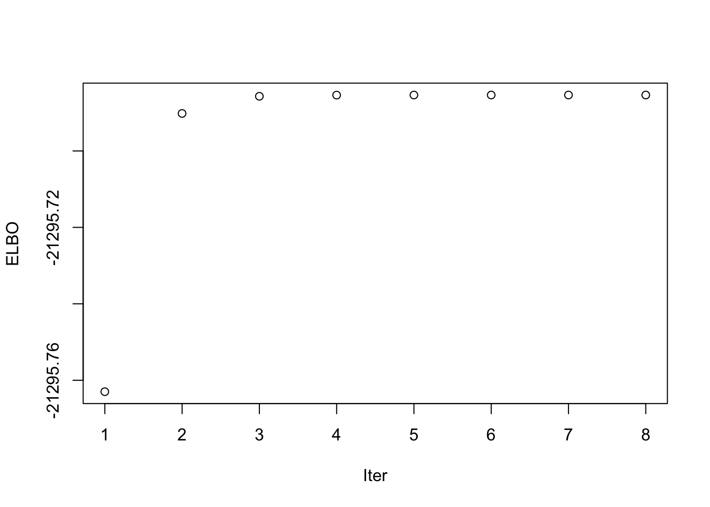
| Version | Author | Date |
|---|---|---|
| eaf2917 | Annie Xie | 2025-06-10 |
This is the objective function value:
symebcovmf_fac3_default_init_fit$elbo[1] -21150.65This has a higher objective function value. This suggests that the greedy procedure prefers the estimate from the default initialization. However, the previous section suggests that for overall fit, the objective function prefers the sparser representation. So the greedy method may not be the way to attain the sparser representation?
sessionInfo()R version 4.5.1 (2025-06-13)
Platform: aarch64-apple-darwin20
Running under: macOS Tahoe 26.3
Matrix products: default
BLAS: /Library/Frameworks/R.framework/Versions/4.5-arm64/Resources/lib/libRblas.0.dylib
LAPACK: /Library/Frameworks/R.framework/Versions/4.5-arm64/Resources/lib/libRlapack.dylib; LAPACK version 3.12.1
locale:
[1] en_US.UTF-8/en_US.UTF-8/en_US.UTF-8/C/en_US.UTF-8/en_US.UTF-8
time zone: America/Chicago
tzcode source: internal
attached base packages:
[1] stats graphics grDevices utils datasets methods base
other attached packages:
[1] symebcovmf_0.0.0.9000 ggplot2_4.0.1 pheatmap_1.0.13
[4] ebnm_1.1-42 workflowr_1.7.2
loaded via a namespace (and not attached):
[1] sass_0.4.10 generics_0.1.4 ashr_2.2-67 stringi_1.8.7
[5] lattice_0.22-7 digest_0.6.39 magrittr_2.0.4 RColorBrewer_1.1-3
[9] evaluate_1.0.5 grid_4.5.1 fastmap_1.2.0 rprojroot_2.1.1
[13] jsonlite_2.0.0 Matrix_1.7-4 processx_3.8.6 RSpectra_0.16-2
[17] whisker_0.4.1 ps_1.9.1 mixsqp_0.3-54 promises_1.5.0
[21] httr_1.4.7 scales_1.4.0 truncnorm_1.0-9 invgamma_1.2
[25] jquerylib_0.1.4 cli_3.6.5 rlang_1.1.6 deconvolveR_1.2-1
[29] splines_4.5.1 withr_3.0.2 cachem_1.1.0 yaml_2.3.12
[33] otel_0.2.0 tools_4.5.1 SQUAREM_2021.1 dplyr_1.1.4
[37] httpuv_1.6.16 vctrs_0.6.5 R6_2.6.1 lifecycle_1.0.4
[41] git2r_0.36.2 stringr_1.6.0 fs_1.6.6 trust_0.1-8
[45] irlba_2.3.5.1 pkgconfig_2.0.3 callr_3.7.6 gtable_0.3.6
[49] pillar_1.11.1 bslib_0.9.0 later_1.4.4 glue_1.8.0
[53] Rcpp_1.1.0 xfun_0.54 tibble_3.3.0 tidyselect_1.2.1
[57] rstudioapi_0.17.1 knitr_1.50 farver_2.1.2 htmltools_0.5.9
[61] labeling_0.4.3 rmarkdown_2.30 compiler_4.5.1 S7_0.2.1
[65] getPass_0.2-4